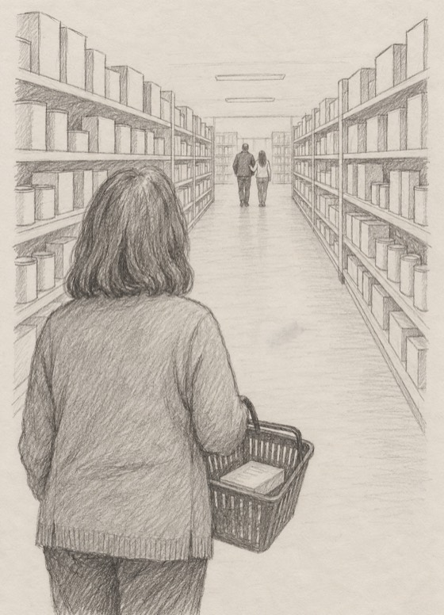

|
Let me tell you a story. Diane is made up, but you might know her Tuesday night. Here she is.
I ran into my ex at Walmart. He was with her. She couldn’t have been more than 35.
And I was holding a frozen lasagna that said SERVES 1, in big red letters.
I’d never noticed how big those letters were. Until that night.
It was a Tuesday. Hair up. My oldest sweatshirt, the one with the bleach spot. I turned into the coffee aisle, and there they were.
She looked at me. Then at him. “Babe, who’s this?”
Nineteen years, and he didn’t say my name. He said:
“Oh. Just someone from before.”

I didn’t make a scene. I smiled. I said, “Good to see you.” Then I walked to the checkout with my lasagna like a woman who had somewhere to be.
I made it to the car before I cried.
The lasagna rode home in the passenger seat, and I started on the reasons.
She’s younger.
I let myself go.
That was my one good chance, and I used it on him.
After that, I stopped shopping on Tuesdays. Then I stopped going to that Walmart. I drove eleven extra minutes for milk.
I ate the lasagna standing at the counter. It did, in fact, serve one.
My sister meant well. She said, “Honey, at our age you take what you can get.”
That didn’t help.
By week three, I’d decided. I was done.
One night I couldn’t sleep. I’d been deleting emails from a woman called Evelyn for months. That night I clicked one. The first three minutes were free.
You just type. So I typed it all. The aisle, the lasagna, “someone from before.”
She didn’t tell me I looked great. She didn’t say he’d be sorry. She said the hurt wasn’t really about him.
Then she asked me one question, about my “one good chance.”
“Whose voice is that?”
I sat there. And I heard it.
I was nine, sitting on the edge of the bathtub, watching my mother put on lipstick. She was talking about a neighbor whose husband had just left.
She blotted her lips on a tissue and said, “Well. You get one good chance. After that, they all go younger.”
Fifty years later, I could still see the red mark on that tissue.
No wonder that aisle hurt. It wasn’t telling me anything new. It was agreeing with my mother.
That sentence in the car was never mine. Mom probably got it from hers. I’d just been carrying it around Walmart.
Diane’s made up. That sentence isn’t. Plenty of us were handed one like it before we were old enough to argue.
And here’s what I believe. You can be completely done with a man and still feel your knees go in the coffee aisle. It isn’t him. It’s the old sentence.
So ask yourself:
Have you ever changed your day, your store or your route so you wouldn’t run into someone?
When love goes wrong, does a voice in your head start with “At my age…”?
Is there a sentence about women and their chances that you heard before you were ten?
This isn’t for everyone. If none of those rang a bell, skip the rest and enjoy your lasagna.
But if even one of them stung, ex or no ex, come and tell me. What happened, and what you told yourself after. Or just the sentence you still hear.
You type it out, the way Diane did. I’ll read it, and we’ll look at whose voice it really is.
Evelyn, I want to find out whose sentence I’ve been living by →
If we’ve never talked before, your first 3 minutes are my treat.
A frozen lasagna keeps for months. A sentence like that can keep for fifty years. It doesn’t need one more night.
Tell Evelyn about my aisle →
— Evelyn
P.S. “Just someone from before.” If words like that are still rattling around in your head, I doubt they’re alone in there. Come and tell me what else you hear. Start here.
|